Версия 0.1 (кандидат в релиз). English version.
Model Forge учит модель для картинок чему-то новому по вашим фотографиям: человеку, предмету или стилю. Результат — небольшой файл-дополнение, LoRA. Его можно использовать в VOXPrint AI Canvas, чтобы создавать новые картинки с этим человеком, предметом или в этом стиле.
Всё происходит на вашем компьютере. Фотографии, описания и обученная модель никуда не отправляются.
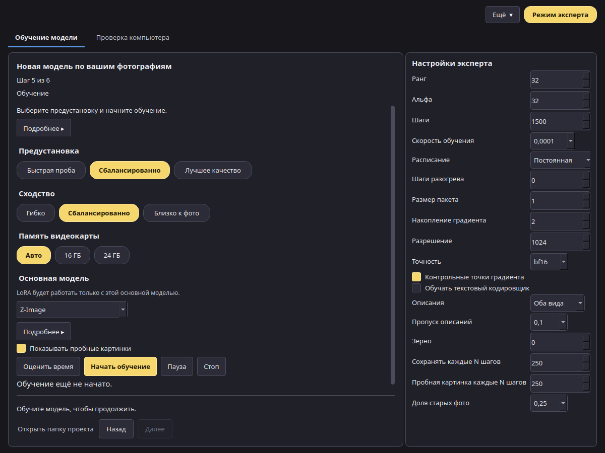
Шаги показаны вверху окна (Шаг 1 из 6 … Шаг 6 из 6): 1 Фотографии, 2 Кто или что на фото, 3 Сбор набора, 4 Проверка и подготовка, 5 Обучение, 6 Результат. На каждом шаге видна одна короткая строка. На шаге «Фотографии» эта строка называет выбранный сюжет, а в пустой области для снимков, пока вы не добавите фото, видна короткая подсказка. На остальных шагах Подробнее ▸ открывает полное пояснение. Открыть папку проекта на одной линии с «Назад» и «Далее» открывает папку с фото, версиями и пробными картинками.
На снимках экрана в этом руководстве — демонстрационный проект с нейтральными картинками-заглушками.
| Минимум | |
|---|---|
| Система | Windows 11 24H2 или новее, 64-разрядная. На Linux приложение запускается из исходного кода (см. README). |
| Видеокарта | NVIDIA с 16 ГБ видеопамяти (с 24 ГБ быстрее), серия RTX 30 или новее |
| Драйвер | Актуальный драйвер NVIDIA |
| Оперативная память | 32 ГБ. См. уровни оперативной памяти. |
| Диск | Около 45 ГБ свободного места: около 35 ГБ на модели, плюс приложение и ваши проекты. Если нужна ещё и MOSS-Image Base, добавьте около 27 ГБ. |
| Интернет | Нужен только для установки и первой загрузки моделей |
| PowerShell | Рекомендуется PowerShell 7. Если его нет, установщик предложит скачать и установить его с сайта Microsoft. Если отказаться или установка не удастся, установщик использует Windows PowerShell 5.1 и предложит установить PowerShell 7 позже (как установить). |
VoxprintModelForgeSetup.exe и подтвердите запрос администратора.C:\Program Files\VOXPrint AI Suite\Model Forge, затем загружает Python и нужные библиотеки. Это занимает несколько минут. Не отключайте интернет.Руководство открывается пунктом Открыть руководство в приложении. PDF-копии лежат в C:\Program Files\VOXPrint AI Suite\Model Forge\docs.
Если установка не удалась, установщик покажет путь к журналу: C:\Program Files\VOXPrint AI Suite\Model Forge\setup-work\install.log. Проверьте подключение к интернету и запустите установщик снова.
Откройте вкладку Проверка компьютера. На ней видны видеокарта, оперативная память, свободное место на диске и недостающие модели. Нажмите Управление моделями, чтобы загрузить их (см. Загрузка моделей), затем Проверить снова.
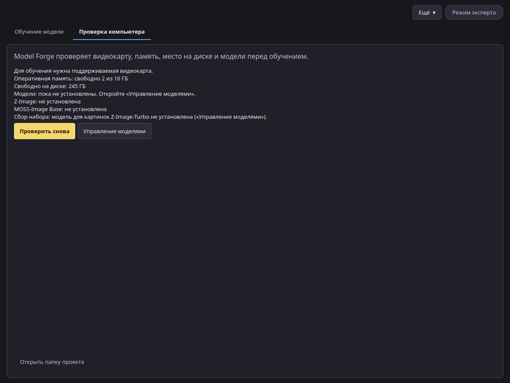
Удалите приложение в разделе «Параметры» > «Приложения» > «Установленные приложения». В меню «Пуск» нет ярлыка удаления. Ваши проекты и загруженные модели остаются на месте. Как удалить и их, описано в разделе «Конфиденциальность» на странице Решение проблем.
Для обучения Model Forge нужны модели. Их нет внутри установщика, поэтому он небольшой. При первом запуске откройте вкладку Проверка компьютера и нажмите Управление моделями. Откроется загрузчик моделей VOXPrint (MDL) и загрузит недостающее.
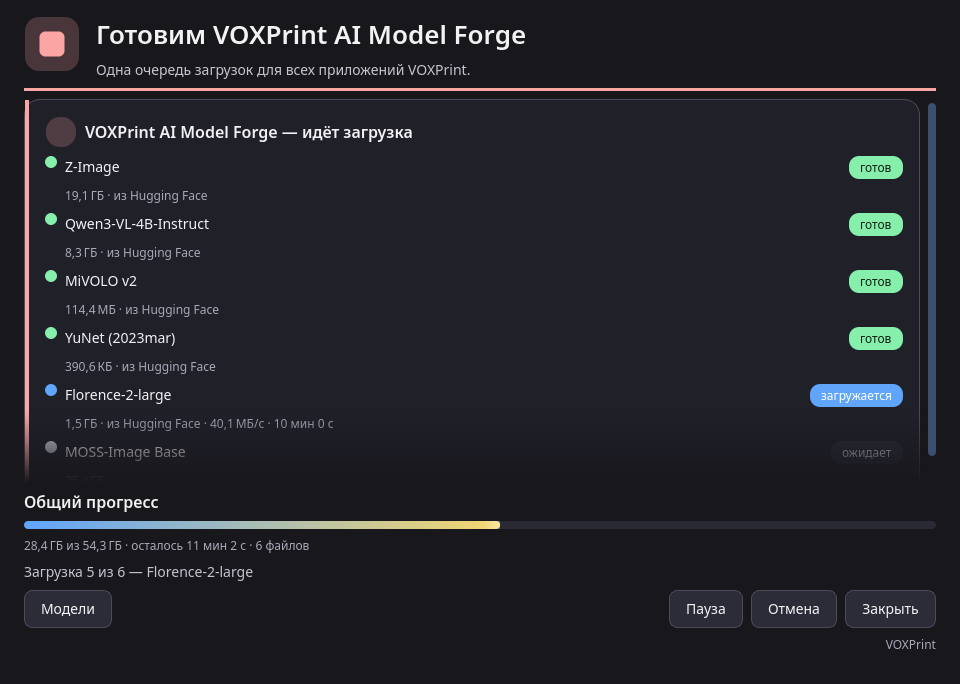
| Модель | Что делает | Источник | Лицензия | Размер |
|---|---|---|---|---|
| Z-Image (base) | Модель для картинок, на которой обучается LoRA | Tongyi-MAI/Z-Image | Apache-2.0 | 20,5 ГБ |
| Qwen3-VL-4B-Instruct | Пишет описания фото; нужна для подготовки фото | Qwen/Qwen3-VL-4B-Instruct | Apache-2.0 | 8,9 ГБ |
| MiVOLO v2 | Нужна для подготовки фото | iitolstykh/mivolo_v2 | Apache-2.0 | 0,1 ГБ |
| YuNet (2023mar) | Находит лица; нужна для подготовки фото | opencv/opencv_zoo | MIT | меньше 1 МБ |
| Florence-2-large | Запасная модель для описаний | microsoft/Florence-2-large | MIT | 1,6 ГБ |
| MOSS-Image Base | Вторая основная модель. Быстрее и помещается на карту 16 ГБ | OpenMOSS-Team/MOSS-Image-Base | Apache-2.0 | 27,2 ГБ |
| Z-Image-Turbo | Рисует картинки на шаге Сбор набора (необязательно) | Tongyi-MAI/Z-Image-Turbo | Apache-2.0 | 32,9 ГБ |
| DINOv2 base | Отмечает почти одинаковые картинки на шаге Сбор набора (необязательно) | facebook/dinov2-base | Apache-2.0 | 0,4 ГБ |
%LOCALAPPDATA%\VOXPrint AI Suite\models. Другие приложения VOXPrint используют ту же папку, поэтому каждая модель загружается один раз.На вкладке Проверка компьютера есть кнопка Проверить и восстановить модели. Окно прогресса открывается каждый раз, в том числе когда все файлы уже на месте. Каждая установленная модель проверяется по файлам: файл должен быть на месте, а его контрольная сумма должна совпасть. В окне модель получает состояние ОК, нет файла или повреждён. Восстановить заново скачивает только недостающие или повреждённые файлы с официального источника, сверяет закреплённую контрольную сумму и продолжает оборванную загрузку, если источник это позволяет. LoRA и проекты не изменяются. Подключаемая модель с официального источника восстанавливается по её адресу так же.
voxprint-forge-cli models verify
voxprint-forge-cli models verify --repair
voxprint-forge-cli models verify --gui
models verify запускает voxprint-mdl verify, печатает его таблицу и завершается с ошибкой, если что-то всё ещё сломано. В таблице состояния написаны по-английски: OK, missing, corrupt. --repair — это voxprint-mdl verify --repair; файлы исправляются без вопроса. --gui открывает общее окно прогресса.
Чтобы удалить ненужную модель, снова откройте «Управление моделями»: там видны установленные модели, их размер и лицензия.
Начните с Ещё → Новая модель. Проект хранит в одной папке ваши фото, их описания, версии обучения и пробные картинки.
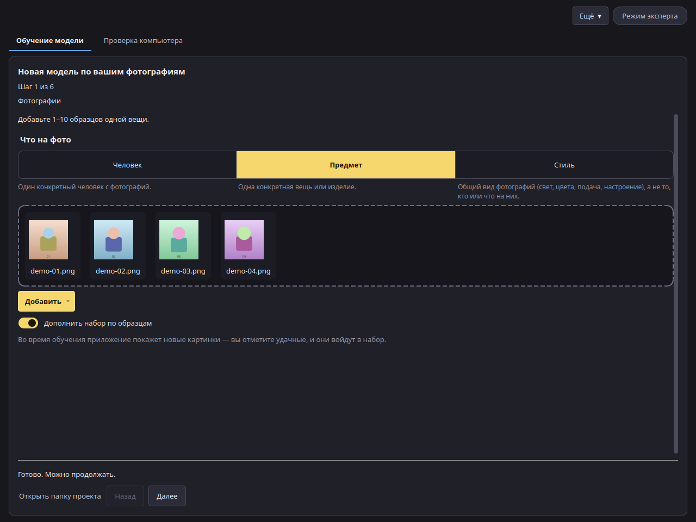
Хорошие фото — хорошая модель:

vxp и согласные), а не слово из имени. Сценическое имя — только псевдоним. Ключевое слово можно изменить. Обычное слово может заставить модель нарисовать это слово как текст.На каждом фото должны быть только взрослые люди, давшие согласие, и у вас должно быть право использовать это фото. Некоторые фото при подготовке могут быть отклонены; замените их другими фото того же объекта.
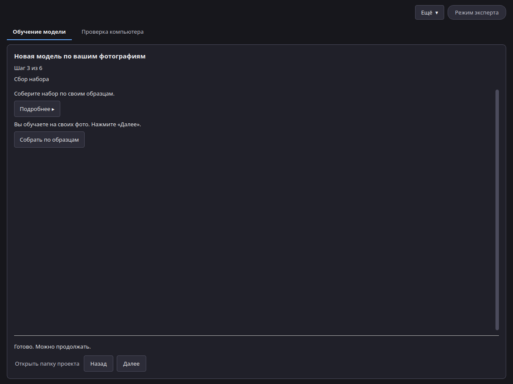
Если вы обучаете на своих фото, этот шаг просто сообщает об этом; нажмите Далее. Если хороших снимков мало, включите Дополнить набор по образцам на шаге 1 или нажмите Собрать по образцам здесь и используйте от 1 до 10 фото одного человека, одной вещи или одного стиля. Затем:
В простом режиме за круг рисуется 24 картинки. В режиме эксперта на панели справа можно задать Картинок за круг, Силу изменений и Шаги. Картинки с пометкой ≈ очень похожа на другую почти не отличаются от другой; оставьте только одну из них. Некоторые картинки могут быть отклонены и не показываются. Начать заново забывает круги и сохраняет образцы.
Дальше: Предустановки и Обучение.
На шаге Обучение вы выбираете предустановку, сходство и память видеокарты. Приложение превращает их в числа для обучения. В режиме эксперта любое число можно изменить на панели справа.
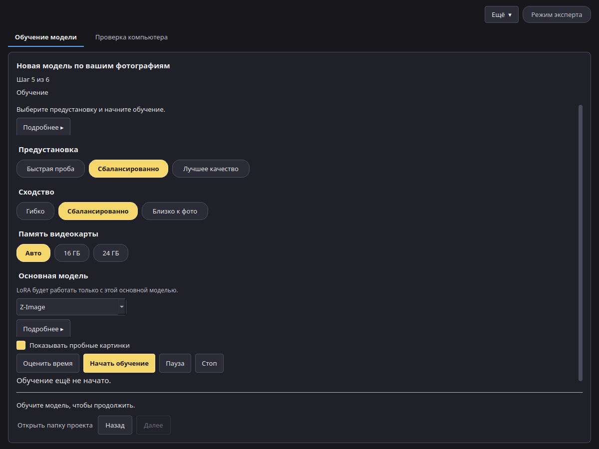
| Предустановка | Шаги | Ранг LoRA | Скорость обучения | Размер картинки | Для чего |
|---|---|---|---|---|---|
| Быстрая проверка | 150 | 16 | 0,0001 | 768 пикс. | Короткий прогон всего пути: подготовка, обучение, пробные картинки, сохранение и экспорт |
| Сбалансированная (рекомендуется) | 1500 | 32 | 0,0001 | 1024 пикс. | Большинство проектов |
| Лучшее качество | 3000 | 32 | 0,00008 | 1024 пикс. | Итоговая модель, когда время не важно |
Сходство меняет число шагов и то, как часто описание пропускается при обучении.
| Сходство | Шаги | Когда выбирать |
|---|---|---|
| Гибко | 0,7 × предустановка | Объект должно быть легко помещать в новые сцены |
| Умеренно | как в предустановке | Большинство проектов |
| Близко к фото | 1,3 × предустановка | Картинки должны больше походить на ваши фото |
Авто определяет вашу видеокарту: меньше 20 ГБ — уровень 16 ГБ, иначе уровень 24 ГБ. Можно выбрать 16 ГБ или 24 ГБ и вручную.
Цифры получены при калибровке предустановки «Сбалансированная» (1024 пикс., ранг 32, одна картинка и два накопления на шаг) на RTX 4090, память которой ограничивали 16 ГБ или 22,5 ГБ, чтобы изобразить каждую карту.
| Основная модель | Уровень | Текстовый кодировщик | Время шага | Пик видеопамяти |
|---|---|---|---|---|
| MOSS-Image Base | 16 ГБ | 8 бит, на видеокарте | 4,89 с | 13,6 ГБ |
| MOSS-Image Base | 24 ГБ | полная точность, на видеокарте | 4,90 с | 18,5 ГБ |
| Z-Image | 16 ГБ | полная точность | 9,7 с при 1024 пикс. | не измерено |
| Z-Image | 24 ГБ | полная точность | 1,6 с при 1024 пикс., не измерено | не измерено |
Время Z-Image на 16 ГБ измерено на ноутбуке с RTX 4090 16 ГБ, одна картинка при 1024 пикс. Пик в том прогоне не записывался, поэтому в строке карты остаётся «от 16 ГБ». Время Z-Image на 24 ГБ не измерено. Оценить время и строка про первые картинки берут эти секунды на шаг. Обучение MOSS-Image Base с предустановкой «Сбалансированная» (1500 шагов) займёт на такой карте около 2 часов плюс несколько минут на загрузку. В списке основных моделей на шаге «Обучение» для MOSS-Image Base показан измеренный пик, для Z-Image — самая маленькая карта, под которую настроены предустановки (от 16 ГБ).
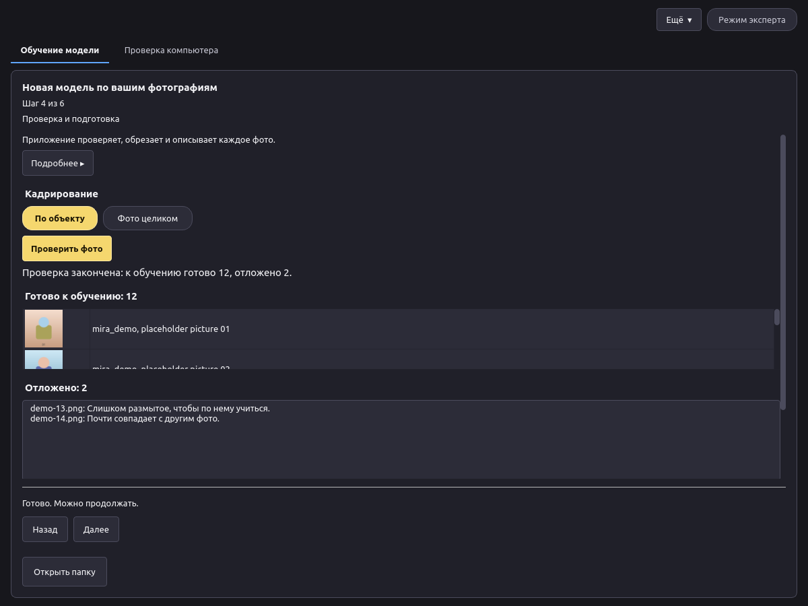
Перед обучением можно убрать любое фото. Если фото осталось слишком мало, добавьте ещё на шаге 1.
Выберите предустановку, сходство и память видеокарты (см. Предустановки), а также основную модель:
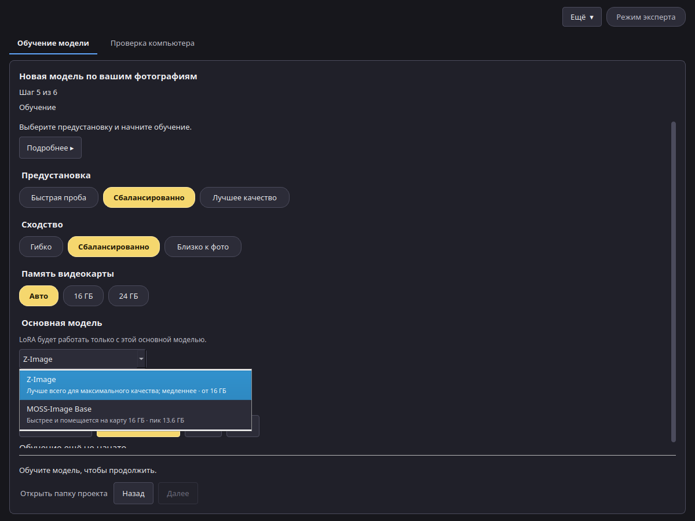
В Подробнее на этом шаге, когда включены раунды просмотра, есть поле Число раундов (от 1 до 6, по умолчанию 3) и поле Шаги первого раунда (от 100 до 500, по умолчанию 120). Число раундов — сколько раз обучение остановится на проверку. Шаги первого раунда — длина этапа до первой проверки. Пока этап идёт, Оценить время неактивна, как и Начать обучение.
Нажмите Оценить время, чтобы увидеть прогноз, затем Начать обучение. Пока этап идёт, шаг говорит, что идёт обучение, а предустановка, сходство, память и основная модель заблокированы. Кнопки Начать обучение и Оценить время выглядят неактивными. Строка показывает шаг из общего числа, сколько этап уже идёт и сколько осталось, в часах и минутах. В первом раунде та же строка говорит, когда будут первые картинки: оставшиеся шаги, умноженные на измеренные секунды на шаг, плюс оставшиеся картинки, умноженные на секунды на картинку. Пока ни одна картинка не измерена, один шаг рисования оценивается как половина шага обучения. Когда время картинки уже измерено, строка показывает и секунды на картинку. Полоса под строкой заканчивается процентом. Потери — в Подробнее. Доступны Пауза и Стоп. Стоп спрашивает, прежде чем остановить обучение.
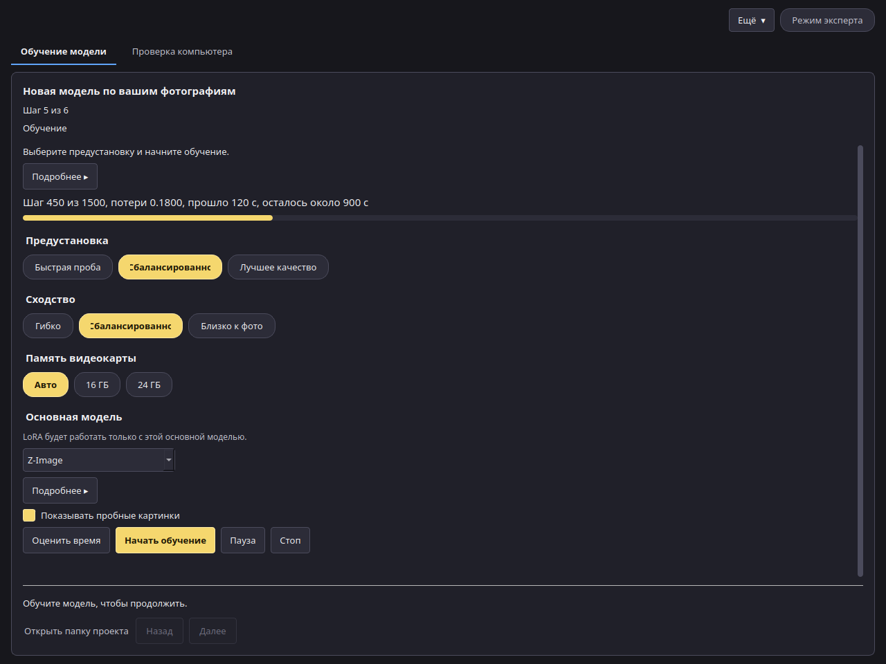
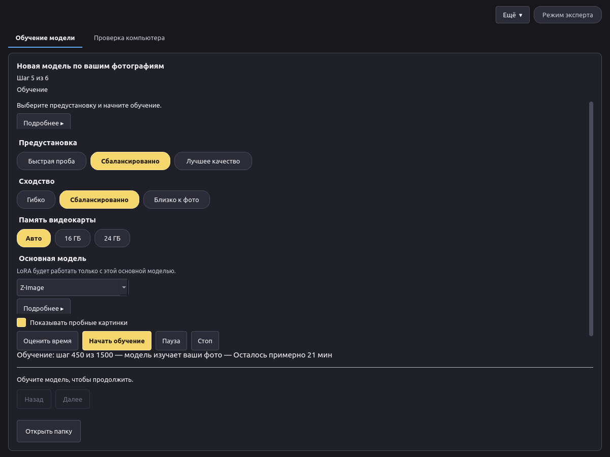
Если на шаге «Фотографии» включено Дополнить набор по образцам, обучение останавливается на проверку. Число раундов (от 1 до 6, по умолчанию 3) задаёт, сколько будет таких остановок. Первый этап — это Шаги первого раунда (по умолчанию 120, от 100 до 500). Затем приложение рисует 6 картинок в том же размере, что и обучение, по 28 шагов рисования. Следующие раунды рисуют по 8 картинок, тоже по 28 шагов. Оставшиеся шаги предустановки (все шаги минус шаги первого раунда) делятся поровну между оставшимися запланированными раундами, и последний забирает остаток. Общее число шагов предустановки не меняется. Если запланирован один раунд, он длится только как первый; оставшиеся шаги доучивает режим Просто продолжить.
Заголовок — Проверьте новые картинки. Ваши фото остаются рядом с новыми. У каждой новой картинки есть Взять и Не брать. Взятая картинка получает золотую рамку и галочку. Отложенная тускнеет, с красноватой рамкой и крестиком. Картинка без отметки остаётся обычной.
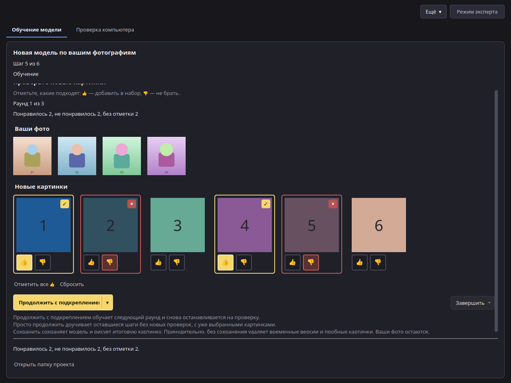
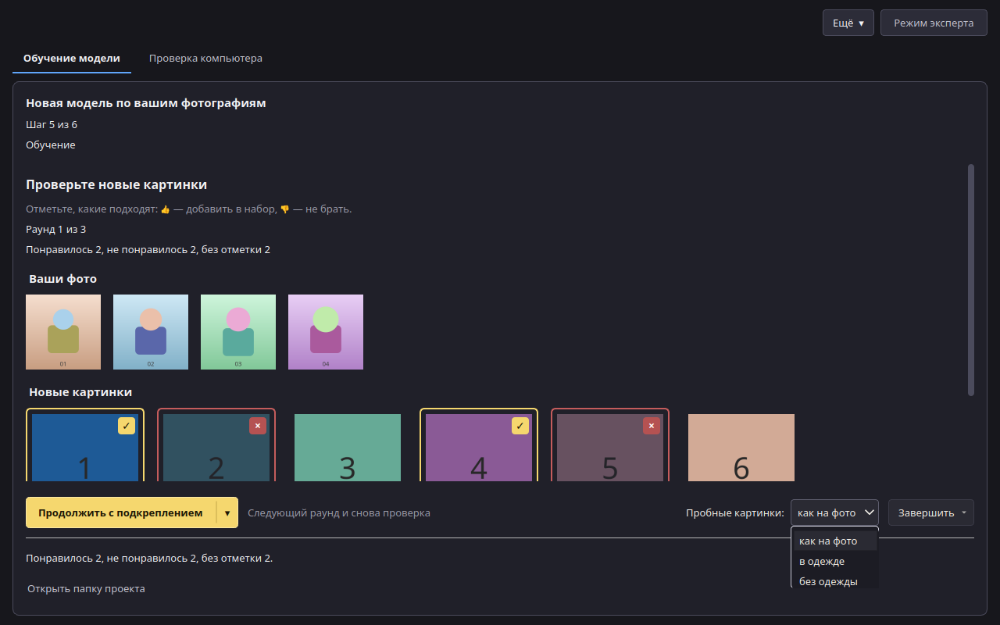
Отметить все 👍 берёт все новые картинки. Сбросить снимает отметки. Внизу видно, сколько взято, сколько отложено и сколько без отметки. В одном ряду с кнопкой продолжения, справа от подсказки, список Пробные картинки: как на фото, в белье или без одежды. Выбор хранится в проекте и действует со следующего раунда. Каждая картинка собирается из редкого ключевого знака, описания объекта из коротких подписей (например, женщина), кадра (крупный портрет, по пояс или в полный рост) и одного слова про одежду. Имя проекта не используется. Как на фото даёт бельё телесного цвета, если на фото есть одежда, и без одежды, если хотя бы одно описание так отмечено. В одном ряду слева большая кнопка, справа маленькая Завершить. По умолчанию большая кнопка — Продолжить с подкреплением: она обучает следующий раунд и снова останавливается на проверку. Узкий ▾ на её правом краю переключает надпись на Просто продолжить и делает кнопку спокойнее, с короткой сменой надписи. Просто продолжить берёт уже выбранные картинки и доучивает оставшиеся шаги без новых проверок. Повторное нажатие ▾ возвращает подкрепление. Выбор сохраняется в настройках проекта. Завершить открывает меню. Сохранить сначала спрашивает и показывает, сколько шагов пройдено из запланированных, затем сохраняет модель и рисует итоговую пробную картинку. Получается готовая LoRA, которую можно экспортировать. На экране результата, в train.json и в данных экспорта (steps и steps_planned) записано, сколько шагов она прошла, например «Завершено на 450 из 1500 шагов». Принудительно, без сохранения сначала спрашивает, затем останавливает обучение и удаляет временные версии и пробные картинки проекта. Ничего не сохраняется. Ваши фото остаются. Если какая-то картинка без отметки, Продолжить с подкреплением и Просто продолжить спрашивают подтверждение: неотмеченные картинки не войдут в набор. В том же ряду, справа от большой кнопки, одна короткая приглушённая строка называет текущий режим и меняется, когда ▾ переключает его. Полные объяснения — во всплывающих подсказках у большой кнопки, ▾, «Завершить» и каждого пункта меню. Закончить можно и раньше последнего раунда. Назад и Далее скрыты. Если закрыть приложение во время просмотра, тот же экран откроется снова вместе с проектом.
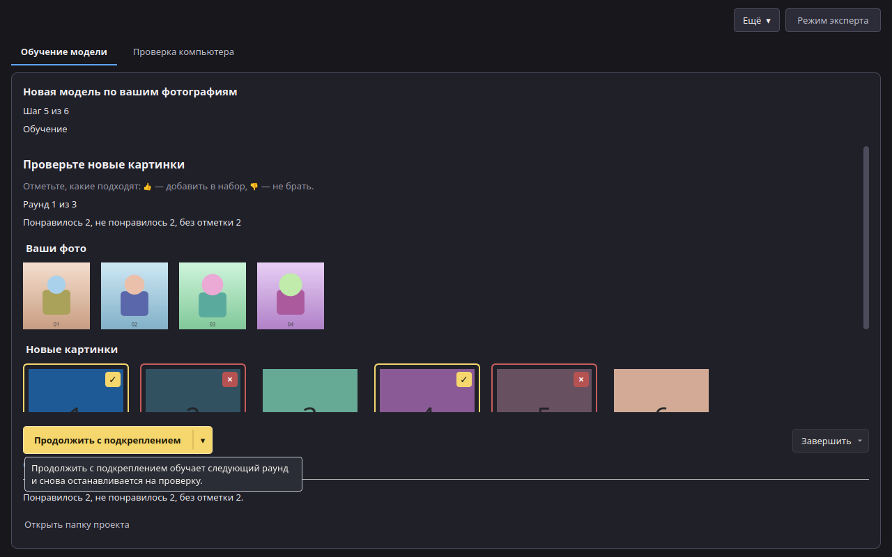
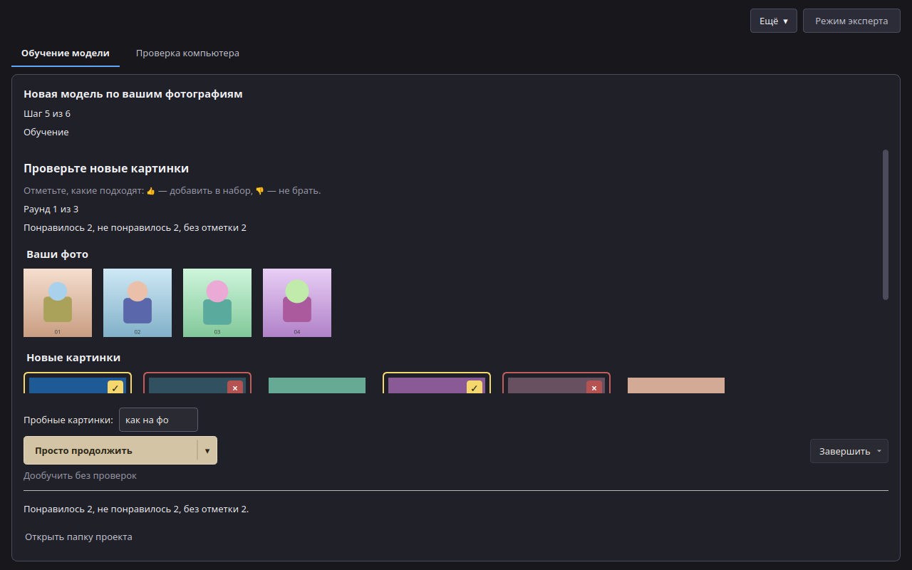
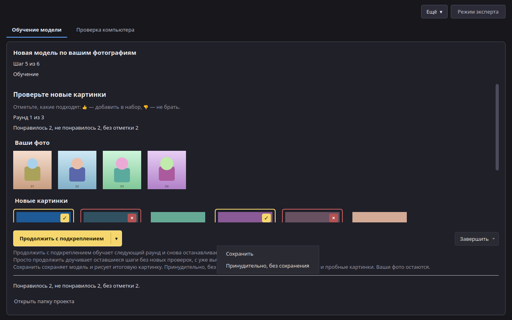
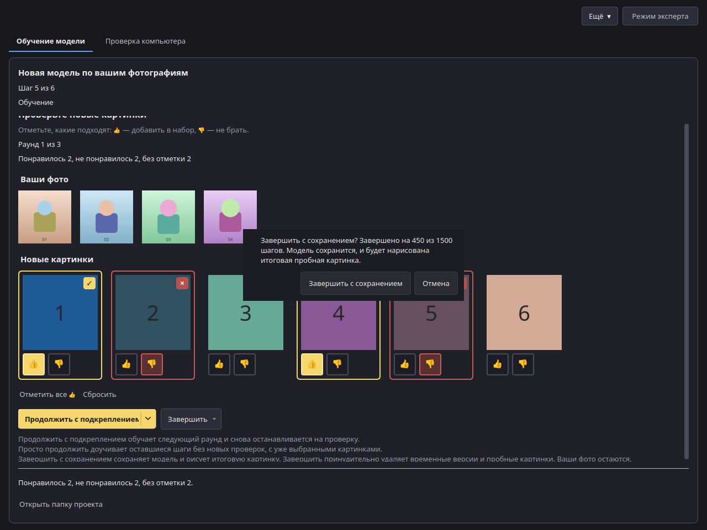
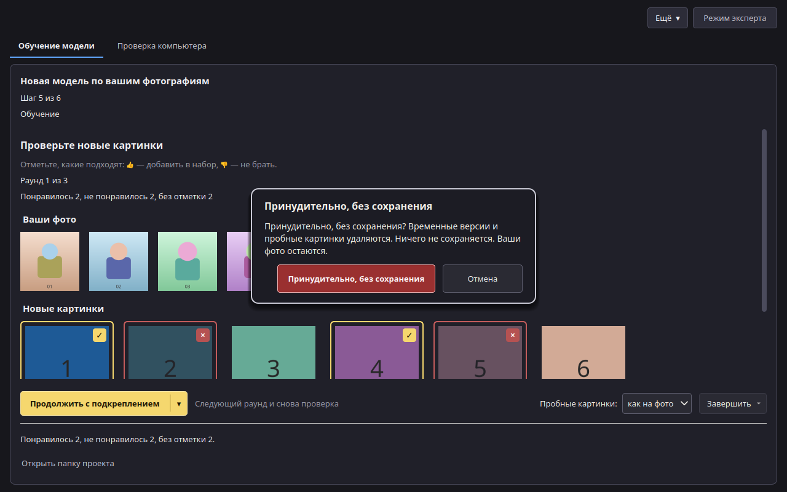
В командной строке то же делает lora train --review-rounds N --first-round-steps 120 --first-round-samples 6 --samples-per-round 8 --sample-steps 28 --sample-attire auto. --sample-attire — это auto (по умолчанию), as_photos, clothed или unclothed; значение хранится в проекте. N — от 1 до 6, по умолчанию 3. lora review показывает картинки и ставит отметки (--like, --dislike или --from-file). lora continue PROJECT запускает следующий раунд и снова останавливается на проверку. lora continue PROJECT --unattended доучивает оставшиеся шаги без новых проверок. lora finish PROJECT сохраняет модель, рисует итоговую пробную картинку и записывает пройденные шаги. lora finish PROJECT --discard останавливает обучение и удаляет временные версии и пробные картинки; без терминала нужна ещё --yes. Ваши фото остаются. lora status в первом раунде печатает ту же строку про первые картинки. --review-rounds 0 обучает без остановок на просмотр.
В режиме эксперта панель справа показывает все значения: Ранг, Альфа, Шаги, Скорость обучения, Расписание, Шаги разогрева, Размер пакета, Накопление градиента, Разрешение, Точность, Контрольные точки градиента, Обучать текстовый кодировщик, Описания, Модель для описаний, Пропуск описаний, Зерно, Сохранять каждые N шагов и Пробная картинка каждые N шагов. Кнопка Сбросить рядом с предустановками возвращает значения выбранной предустановки.
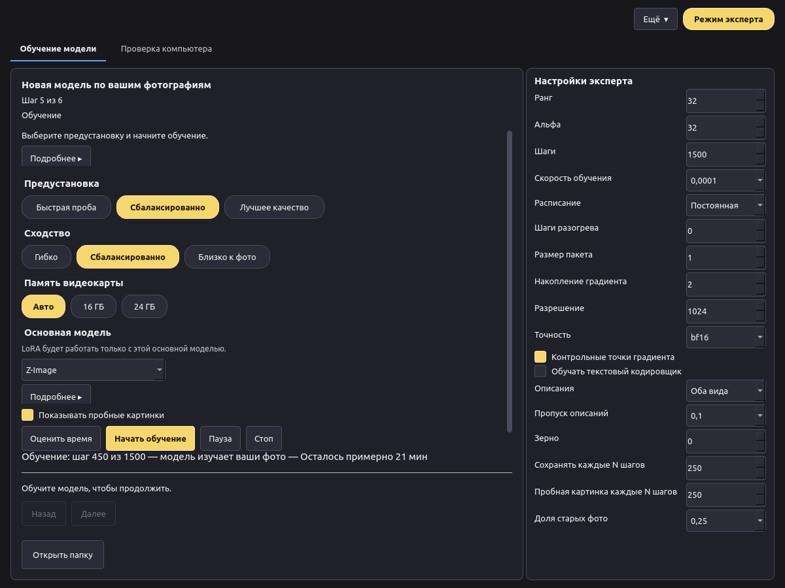
Рекомендуется от 10 до 30 фото. Допустимо в режиме эксперта: от 5 до 60 фото.
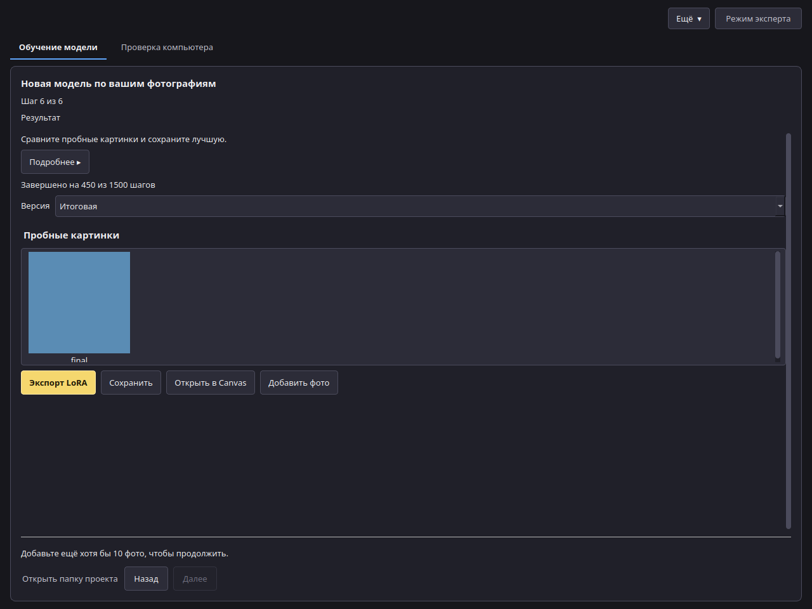
.voxlora: веса LoRA, описание voxprint-model.json и пробные картинки. Ваших фото в нём нет. Имя файла — сценическое имя, или имя, если сценическое имя пустое..safetensors с файлом описания (voxprint-model.json), лицензией и уведомлением. Его можно хранить или передавать на условиях лицензии основной модели..safetensors к вашим моделям. В Canvas выберите LoRA, напишите ключевое слово в запросе и задайте силу (для начала подойдёт 0,8).Чтобы улучшить модель позже, нажмите Добавить фото на этом шаге. Обучение продолжится с этой модели на новых фото и части старых.
%LOCALAPPDATA%\VOXPrint AI Suite\models\user-models\lora\<имя>\.%LOCALAPPDATA%\VOXPrint AI Suite\state\model-forge\lora\. Ещё → Открыть проект… открывает прежний проект; Открыть папку проекта показывает его фото, версии и пробные картинки.Введённые имена, ключевое слово, подтверждения согласия и 18+, способ согласия (устно или файл), пометку о материалах для взрослых, необязательную заметку о происхождении, отметку о приложенном разрешении и его отпечаток, а также настройки обучения. В нём нет фото, путей к файлам, имени пользователя, сведений о компьютере и метаданных фото.
Те же экспорты доступны из командной строки:
voxprint-forge-cli lora export <папка проекта> [-o <файл.voxlora>]
voxprint-forge-cli lora export --project <папка проекта> [--checkpoint <шаг>] [--out <файл.safetensors>] [--install-to-mdl]
Первая команда записывает пакет .voxlora (zip без сжатия): model.safetensors, voxprint-model.json и пробные картинки из образцов, которые прошли проверку результата. Описание соответствует docs/schemas/voxprint-model-1.json. В нём записаны пройденные и запланированные шаги. --install-to-mdl относится ко второй команде и добавляет файл .safetensors к вашим моделям для Canvas. Подробнее — в справочнике по командной строке (на английском).
Некоторые части моделей могут работать в сжатом (квантованном) виде, которому нужно меньше видеопамяти. Model Forge использует сжатую часть, только когда она проверена в сравнении с оригиналом. Результаты приведены здесь.
Текстовый кодировщик превращает ваш запрос и описания в числа для модели картинок. На уровне 16 ГБ он работает на видеокарте в 8-битном виде (int8), на уровне 24 ГБ — в полной точности (bf16). Сама модель картинок никогда не сжимается.
Как проверяли: 8 запросов, каждый нарисован с кодировщиком в полной точности и с каждым сжатым, с одним и тем же зерном. Затем картинки оценили по тому, насколько они соответствуют запросу (оценка CLIP, больше — лучше), и по тому, насколько они отличаются от картинки в полной точности (LPIPS, меньше — ближе).
| Текстовый кодировщик | Видеопамять при кодировании | Соответствие запросу (CLIP) | Отличие от полной точности (LPIPS, среднее) |
|---|---|---|---|
| Полная точность (bf16) | 15,7 ГБ | 28,38 | — |
| 8 бит (int8), по умолчанию для 16 ГБ | 8,9 ГБ | 28,43 | 0,134 |
| 4 бита (nf4) | 5,9 ГБ | 28,50 | 0,167 |
8-битный кодировщик соответствует запросам так же хорошо, как кодировщик в полной точности, и занимает примерно вдвое меньше памяти, поэтому на картах 16 ГБ он используется по умолчанию. 4-битный тоже соответствует запросам, но его картинки сильнее отходят от оригинала, поэтому он доступен только как вариант.
Выбор можно изменить в командной строке параметром --te-quant auto|none|int8|nf4 команды lora train (auto — значение по умолчанию для уровня). Подробнее — на странице MOSS-Image (на английском).
Обучение измерялось с кодировщиком, который используется на уровне по умолчанию; см. Предустановки → Измеренные цифры.
Инструмент командной строки также сравнивает сжатые языковые модели и модели картинок с оригиналами. Для этих тестов нужна видеокарта NVIDIA; они рассчитаны на опытных пользователей:
voxprint-forge-cli kl сравнивает сжатые языковые модели с оригиналом: KL (на английском).voxprint-forge-cli compare сравнивает сжатые модели картинок с оригиналом: Compare (на английском).VOXPrint AI Suite делит компьютеры на три уровня по объёму установленной оперативной памяти. Уровень общий для всех приложений VOXPrint.
| Уровень | Сколько памяти показывает Windows | Типичный компьютер | Что делает пакет |
|---|---|---|---|
| 32 ГБ | меньше 44 ГБ | 32 ГБ | Модели читаются с диска каждый раз, когда нужны, и не хранятся в памяти. |
| 64 ГБ | от 44 ГБ до 88 ГБ | 48 или 64 ГБ | Модели остаются в памяти между заданиями, а основные из них подготовлены к быстрой передаче на видеокарту. Следующая модель может загружаться заранее. |
| 96 ГБ | 88 ГБ и больше | 96 ГБ и больше | Все модели остаются в памяти и подготовлены к быстрой передаче на видеокарту. |
Компьютер показывает чуть меньше памяти, чем установлено (компьютер с 32 ГБ показывает около 31,7 ГБ), поэтому границы немного ниже круглых чисел.
По умолчанию уровень определяется по установленной памяти. Опытные пользователи могут задать его параметром memory.ram_mode (auto, ram32, ram64 или ram96) в файле настроек пакета или переменной окружения VOXPRINT_RAM_MODE.
| Что вы видите | Что сделать |
|---|---|
| «Для обучения нужна поддерживаемая видеокарта» | Используйте компьютер с видеокартой NVIDIA на 16 ГБ или больше и актуальным драйвером. |
| «Модели: пока не установлены» | Нажмите Управление моделями и загрузите недостающие модели. |
| Подготовка не начинается, потому что не хватает моделей | Загрузите Qwen3-VL-4B-Instruct, MiVOLO v2 и YuNet в «Управлении моделями». |
| «Добавьте ещё хотя бы N фото» | Много фото отложено. Добавьте ещё чётких фото или используйте режим эксперта. |
| «Эти фотографии нельзя использовать для обучения» | Некоторые фото отклонены, и этот проект продолжить нельзя. Начните новый проект с другими фото взрослых людей, давших согласие. |
| «В папке проекта остался файл PAUSE» | Нажмите Продолжить в приложении. Если сообщение повторяется, удалите файл PAUSE в папке проекта. |
| Не хватает видеопамяти | Выберите 16 ГБ в «Памяти видеокарты», закройте другие программы, использующие видеокарту, и попробуйте снова. |
| Не хватает места на диске | Освободите место на диске с %LOCALAPPDATA%\VOXPrint AI Suite или удалите ненужные модели в «Управлении моделями». |
| Установка не удалась | Прочитайте C:\Program Files\VOXPrint AI Suite\Model Forge\setup-work\install.log, проверьте интернет и запустите установщик снова. |
| Пробные картинки не похожи на объект | Выберите сходство Близко к фото или Лучшее качество, добавьте более разнообразные фото или возьмите более позднюю версию. |
| Все картинки повторяют фото | Выберите сходство Гибко или более раннюю версию и добавьте разнообразия в фото. |
Можно ли обучить модель на фото человека, найденных в интернете? Нет. Обучайте только на взрослых людях, давших согласие, и на фото, которые вы вправе использовать.
Почему некоторые фото отложены или отклонены? На шаге 4 для каждого отложенного фото указана причина. Некоторые фото могут быть отклонены; замените их другими.
Что-нибудь уходит с моего компьютера? Нет. Из интернета загружаются только библиотеки приложения и модели.
Можно ли использовать LoRA в коммерческих целях? LoRA следует лицензии своей основной модели. У Z-Image и MOSS-Image Base лицензия Apache-2.0. Вы также отвечаете за права на фото и согласие людей на них.
Можно ли продолжить обучение позже? Да. Поставьте на паузу и продолжите или нажмите Добавить фото у готовой модели.
%LOCALAPPDATA%\VOXPrint AI Suite\state\model-forge и, если другие приложения VOXPrint их не используют, модели в %LOCALAPPDATA%\VOXPrint AI Suite\models.| Компонент | Лицензия |
|---|---|
| VOXPrint AI Model Forge | Apache-2.0 |
| Z-Image, Z-Image-Turbo | Apache-2.0 |
| MOSS-Image Base | Apache-2.0 |
| Qwen3-VL-4B-Instruct | Apache-2.0 |
| Florence-2-large | MIT |
| MiVOLO v2 | Apache-2.0 |
| YuNet | MIT |
| DINOv2 base | Apache-2.0 |
Полные тексты лицензий поставляются с каждой моделью и видны в «Управлении моделями». Лицензия и уведомление самого приложения — файлы LICENSE и NOTICE в папке установки.